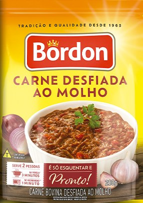
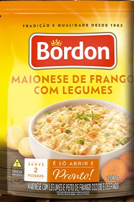
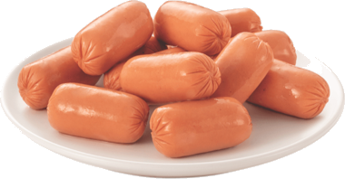

Enlatados e conservas cresceram 2,4 vezes mais que o varejo alimentar. A demanda chegou. A pergunta é quem ela vai encontrar na gôndola.
+9,1%Enlatados e conservas
+5,7%Molhos e temperos
+3,8%Varejo alimentar total
+3,7%Proteína animal
Fonte: NielsenIQ para ABRAS, Monitoramento semanal, semana 44/2026 (26/10 a 01/11/2026), crescimento em valor nas últimas 52 semanas, autosserviço e atacarejo.
Ponto Pronto Bordon: a estratégia completa de trade para a lata deixar a despensa e virar o jantar de hoje.
×
(00) Quem faz
Trade feito por quem já esteve dos dois lados do balcão.
Varejo e indústria na mesma mesa. A 75 LAB pensa, cria, fabrica, instala e mede o ponto de venda.
+15anos entre indústria e varejo
18marcas atendidas em 2025 e 2026
4plataformas próprias de trade
De ponta a ponta
Estratégia
Key visual
Projeto executivo
Produção
Instalação
Medição
Marcas de alimentos e bebidas que confiam na 75 LAB
Seara
Lactalis
Nestlé
Panco
Savencia
Scala
Divina Terra
Coop
Fonte: 75 LAB, carteira de clientes de 2025 e 2026.
×
(00) Nosso jeito
Estratégia que sai do papele chega na gôndola.
Vivemos o trade
Quem desenha a ação já teve de aprovar, instalar e cobrar ação igual dentro da loja.
Língua de quem decide
Cada frente é medida em giro, positivação e margem, não em quantidade de material.
PDV que se mede
Toda peça sai com QR: sabemos onde foi instalada, quando e se segue no lugar.
Projeto que vira ativo
Escopo fechado, em ondas. O que fica para a Bordon é método, calendário e enxoval.
×
(00) Resumo executivo
A estratégia em uma tela.
01Para onde vamos
Da despensa para o jantar de hoje
Bordon vista, lembrada, provada e medida em toda loja do canal escolhido até o fim de 2027.
02Por que
A demanda chegou
A cesta cresce 9,1%, 66% das refeições são feitas em até 30 minutos e a carne fresca está no maior preço real da série.
03Como
Ponto Pronto Bordon
Uma plataforma e seis frentes: canais, gôndola, peças, ativação, promoção e digital, num calendário de 12 meses.
04O que teremos
Execução que se prova
Cada peça com QR, ondas até todas as lojas do canal, sem piloto, e indicadores lidos todo mês.
VistaLembradaProvadaEscolhidaMedida
Fontes: NielsenIQ para ABRAS, semana 44/2026; Kantar, Consumer Insights 2024 (publicado em 17/03/2025); Cepea via Compre Rural, 05/11/2026.
×
Capítulo 01 de 04
01
Para onde vamos
A ambição e o que precisa mudar na loja até o fim de 2027.
01Para onde vamos
02Por que
03Como
04O que teremos
×
(01) Para onde vamos
De estoque da despensa a jantar de hoje.
Hoje, na maior parte das lojasFim de 2027, nas lojas do plano
Ser vista
Prateleira baixa, no meio do milho, da ervilha e do atum.
Bloco amarelo na altura dos olhos e um ponto extra fixo.
Ser lembrada
Lembrada na emergência, quando falta tempo ou comida.
Lembrada na decisão do jantar, do lanche e do petisco.
Ser provada
Dúvida sobre o sabor da comida de lata; decisão pelo menor preço.
Provada na loja e escolhida pelo valor por porção.
Ser medida
Ação de loja sem prova de que aconteceu.
Cada peça com QR e leitura loja a loja, todo mês.
×
Capítulo 02 de 04
02
Por que
Mercado, shopper e as barreiras da lata, com dado e com teoria.
01Para onde vamos
02Por que
03Como
04O que teremos
×
(02) Mercado
Tempo curto, bolso apertado, carne cara: a lata pronta responde aos três.
Tempo
66%
das refeições em casa são preparadas em até 30 minutos.
Fora de casa
R$35,40
é o almoço médio fora de casa, +22,1% em um ano.
Orçamento
70%
dos lares têm alguma restrição no orçamento; compra em promoção sobe 35%.
Carne fresca
+17,75%
no boi gordo em 12 meses: maior preço real desde 1994.
O que vemos
O brasileiro quer comer em casa, rápido, gastando menos, e continua querendo carne bovina: ela segue em 33,7% das ocasiões com proteína.
O que significa
Carne bovina de verdade, pronta em minutos, é exatamente a solução que esse momento pede.
Por isso
A Bordon vende jantar resolvido, não lata: a gôndola tem de falar de tempo e de valor por porção.
Fontes: Kantar, Consumer Insights 2024, publicado em 17/03/2025 (66%); Kantar, 08/07/2025 (almoço fora, 1º tri 2025); Worldpanel by Numerator via Mercado&Consumo, 17/09/2026 (orçamento e promoção); Cepea via Compre Rural, 05/11/2026 (boi gordo, out/2026); Worldpanel via Mercado&Consumo, 29/08/2026 (carne bovina em 33,7% das ocasiões).
×
(02) Shopper
A lata se decide na frente da gôndola.
76%
das compras em hiper e supermercado são decididas no ponto de venda.
20 a 30% do tempo na loja é escolhendo; o resto é andar e procurar.
Sistema 1: na prateleira, reconhecer rápido vence comparar com calma.
4 missões de compra, e cada uma pede um PDV diferente.
As missões e o lugar da Bordon em cada umaClique em cada missão
O que ele busca
Encher a despensa com preço por unidade. Tíquete médio subiu 27% nessa missão.
Onde
Atacarejo e hiper
O que a loja precisa ter
Caixa fechada, capa de palete e preço por caixa em destaque.
O que ele busca
Repor o que acabou e resolver as refeições da semana.
Onde
Supermercado
O que a loja precisa ter
Bloco da marca fácil de achar e a lata ao lado do arroz, das massas e do pão.
O que ele busca
O jantar de hoje, agora. Unidades por compra subiram 8% nessa missão.
Onde
Vizinhança, conveniência e aplicativos
O que a loja precisa ter
Os 6 itens de giro sempre na prateleira e o selo de preparo à vista.

O que ele busca
Compra pequena e frequente, perto de casa, muitas vezes por impulso.
Onde
Mercado de bairro e checkout
O que a loja precisa ter
Display de balcão com petisco e lanche prontos, perto do caixa e das bebidas.

Fontes: POPAI Brasil, estudo em hiper e supermercados, via Giro News, 06/10/2010 (76%); Sorensen, Inside the Mind of the Shopper, 2009, e Knowledge@Wharton, 2006 (20 a 30%); Kahneman, Thinking, Fast and Slow, 2011; Kantar, Canais de varejo, 19/02/2024 (missões, jan a set 2023 contra 2022).
×
(02) O desafio
O problema não é a lata. É ser vista, lembrada e provada.
Problema aparentevender mais lata Problema reala lata fora da decisão do jantar
Barreira 1
Ser vista
10,8% de ruptura média nos supermercados do Brasil. Na falta, 31% vão a outra loja e 26% trocam de marca.
TeoriaDisponibilidade física: marca que cresce é a fácil de achar e de comprar (Sharp, 2010).
RespostaMix certo por loja, bloco amarelo e ponto extra fixo.
Barreira 2
Ser lembrada
+9% nas vendas semanais quando produtos que se completam ficam frente a frente no mesmo corredor.
TeoriaMomentos de entrada na categoria: quanto mais situações ligadas à marca, mais ela é lembrada e comprada (Romaniuk, 2023).
RespostaLigar a lata ao jantar, ao lanche e ao petisco, também fora do corredor de conservas.
Barreira 3
Ser provada
Semanas é quanto dura o efeito da degustação, que traz gente nova para a categoria; a ponta de gôndola perde força em cerca de 2.
TeoriaExperimentar reduz o risco de comprar o desconhecido, e a lata ainda carrega a dúvida do sabor.
RespostaDegustação no fim de semana e preço por porção na prateleira.
Na mesma prateleiraAs compras de marca própria crescem 10% e a Oderich disputa a mesma gôndola: sem argumento de valor, a escolha vira briga de centavos.
Fontes: Neogrid via Giro News, ruptura de jul/2026; Helm e Hegenbart, Univ. Regensburg, 2011, a partir de Gruen, Corsten e Bharadwaj, GMA, 2002; Bezawada et al., Journal of Marketing, 2009; Romaniuk, Better Brand Health, OUP, 2023; Sharp, How Brands Grow, OUP, 2010; Chandukala, Dotson e Liu, Journal of Retailing, 2017; Worldpanel via Mercado&Consumo, 17/09/2026.
×
Capítulo 03 de 04
03
Como
A plataforma Ponto Pronto, canais, gôndola, peças, ativação e calendário.
01Para onde vamos
02Por que
03Como
04O que teremos
×
(03) A plataforma
Ponto Pronto Bordon: em toda loja, o jantar já está pronto.
1234
1A promessa"Abriu, esquentou, ficou mais que bom": preparo e resultado em uma frase. É o que o shopper precisa ler em dois segundos.
2O prato heróiA feijoada, prato que todo brasileiro reconhece e que dá trabalho fazer em casa. A lata resolve o difícil.
3Tradição desde 1965A coroa e o amarelo são ativos que a marca já tem. Repetidos na loja, viram atalho de reconhecimento.
4A linha inteiraSeis receitas juntas mostram que existe opção para a semana toda, não só para um dia.
Os dois selos que já estão na embalagem viram a assinatura de todas as peças: o shopper reconhece o Ponto Pronto em qualquer canto da loja.
Fonte: Bordon, key visual Mais que bom e Manual de Identidade Visual (selos e paleta); embalagens com "Tradição e qualidade desde 1965".
×
(03) Pilares
Três ideias para dizer, seis frentes para fazer.
Marketing o que dizemos
Jantar resolvido
A lata ligada a momentos: jantar rápido, lanche, petisco, sábado de feijoada.
Ativos que já são da marca
Amarelo, coroa e os dois selos, repetidos até virarem atalho.
Comida de verdade
Carne bovina pronta: prova no prato, não na promessa.
Trade onde e como
01
Canais
Um papel para cada canal, começando pelo atacarejo.
Base: missões de compra, Kantar 2024
02
Gôndola
Mix por tamanho de loja e bloco amarelo por ocasião.
Base: gerenciamento por categoria, ECR 1995
03
Peças
Dez peças em três conjuntos, com QR.
Base: display com +19% no alimentar, POPAI 2014
04
Ativação
Degustação "Esquentou, provou" nos fins de semana.
Base: Chandukala et al., 2017
05
Promoção e preço
Preço por porção e no máximo 1 oferta a cada 4 itens.
Base: Anderson e Simester, 2001
06
Digital e encarte
Ser achada antes da loja: encarte, busca e app.
Base: e-commerce em 45,4% dos lares, 2025
Fontes: Kantar, 19/02/2024; ECR Best Practices e The Partnering Group, Category Management Report, 1995; POPAI e Quri, Compliance Initiative, 2014, via Retail Environments, jul/ago 2015; Chandukala, Dotson e Liu, Journal of Retailing, 2017; Anderson e Simester, Marketing Science, 2001; Worldpanel by Numerator, Brand Footprint 2026.
×
(03) Canais
Cada canal com um papel e um kit.
Clique em cada canal
76%
dos lares compraram no atacarejo em 2025. No Nordeste, o canal faz 70% do valor do autosserviço.
Papel
Volume e abastecimento. Onde a Bordon ganha escala e o Nordeste.
Missão
Abastecimento: tíquete maior, compra por caixa.
Mix
Itens de giro em caixa fechada e embalagens maiores, como a feijoada de 830 g.
Peças
Capa de palete, ponta de gôndola, faixa por cor.
Mecânica
Preço por caixa e leve mais, pague menos por unidade.
17
itens no mix completo: o único canal com a linha inteira e espaço para experiência.
Papel
Vitrine da marca e experimentação dos pratos prontos.
Missão
Reposição e refeições da semana.
Mix
Linha completa, com os pratos prontos na altura dos olhos.
Peças
Ilha Ponto Pronto, display lata gigante, balcão de degustação, clip strip de cross.
Mecânica
Combo jantar com arroz ou massa e compre e ganhe na data do calendário.
6
itens de giro que não podem faltar: feijoada, carne de panela, salsicha, salsicha ao molho, almôndegas e carne em conserva.
Papel
Presença e giro perto de casa, onde a compra é de urgência.
Missão
Urgência e proximidade.
Mix
Os 6 de giro; no Nordeste, mais fiambre e carne desfiada.
Peças
Display de balcão Petisco, wobbler com selo, stopper.
Mecânica
Kit Pronto pelo distribuidor: caixa mista com os 6 itens e as peças leves.
45,4%
dos lares compraram alimentos e itens de casa online em 2025, contra 31,1% em 2024.
Papel
Ser achada antes da loja e na recompra.
Missão
Urgência por aplicativo e reposição programada.
Mix
Pratos prontos e salsichas, os mais buscados.
Peças
Página de produto com foto do prato, selos e modo de preparo.
Mecânica
Busca patrocinada por "feijoada", "comida pronta" e "salsicha", e combo jantar no carrinho.
Set a dez
é a janela em que empresas e montadoras fecham cestas básicas e de Natal.
Papel
Volume sazonal e um item de lembrança da marca dentro de casa.
Missão
Compra de empresa, por preço e validade longa.
Mix
Carne bovina em conserva, salsicha, feijoada e almôndegas.
Peças
Catálogo para montadoras de cesta e cartão de receita dentro da cesta.
Mecânica
Condição por volume com o time comercial e agenda de setembro.
Fontes: NielsenIQ para ABAAS, mar/2026 (penetração do atacarejo em 2025 e participação regional, acumulado de 2026); Worldpanel by Numerator, Brand Footprint 2026, via Central do Varejo (e-commerce); Kantar, 19/02/2024 (missões).
Olhos para o jantarPratos prontos na prateleira dos olhos, onde a novidade é vista.
Mãos para o giroSalsichas e almôndegas na altura das mãos.
Bloco verticalA marca inteira junta, em bloco amarelo, do topo à base.
Faixa com a cor do manualCada item com a sua cor: o shopper acha pela cor antes de ler.
Nunca faltaFeijoada e salsicha com 4 frentes ou mais e reposição prioritária.
Preço por pessoaNo porta-preço, o valor da refeição dividido por quem come.
Base: gerenciamento por categoria (ECR e The Partnering Group, 1995) e ativos distintivos de marca (Romaniuk, Building Distinctive Brand Assets, OUP, 2018). Gôndola em módulos de 1 m e prateleiras a cada 22 cm, desenhada em escala dentro de cada tamanho de loja; medidas de embalagem de referência, conferidas na visita às lojas.
×
(03) Sistema de peças
Três conjuntos, um caminho até o carrinho.
Entrada e área promocional
Pesadas
Atraem de longe e fazem provar
Peças
Ilha Ponto Pronto, capa de palete, balcão de degustação
Canal
Hiper, supermercado grande e atacarejo
Resolve
Ser vista e ser provada
Resultado
Mais gente experimenta e leva
Corredor e categorias vizinhas
Médias
Explicam a ocasião onde ela nasce
Peças
Display lata gigante, clip strip de cross, display de balcão
Canal
Supermercado, vizinhança e checkout
Resolve
Ser lembrada
Resultado
A lata entra na lista do jantar
Gôndola da categoria
Leves
Convertem na hora de pegar
Peças
Testeira e faixa por cor, wobbler com selo, stopper, preço por porção
Canal
Todos os canais
Resolve
Ser escolhida
Resultado
Decisão em segundos, mais giro
Resultado esperadoMais lojas com a linha exposta, mais pessoas provando e mais giro por loja, lido mês a mês.
Base: How Brands Grow (Sharp, 2010), disponibilidade física e mental; jornada do shopper em longa, média e curta distância.
×
(03) As peças
Dez peças, um só Ponto Pronto.
Clique em cada peça para ampliar a arte
Pesadas atraem e fazem provar
Médias explicam a ocasião
Leves convertem na prateleira
Ponto Pronto
Resolve: ser vista
Ilha Ponto Pronto
Hiper e super · 120 x 80 cm
Leve a caixa
Resolve: ser vista
Capa de palete
Atacarejo · 4 faces
Esquentou, provou.
Resolve: ser provada
Balcão de degustação
Fim de semana · 90 x 50 cm
Resolve: ser lembrada
Display lata gigante
Super · Ø 60 x 160 cm
Molho pronto com carne
Resolve: ser lembrada
Clip strip de cross
Massas, arroz e pães · 6 x 70 cm

Petisco pronto
Resolve: ser lembrada
Display de balcão
Vizinhança e checkout · 30 x 35 cm
Jantar pronto
Resolve: ser vista
Testeira e faixa por cor
Todos · 100 x 30 e 100 x 4 cm
Resolve: ser escolhida
Wobbler com selo
Todos · Ø 12 cm
3 minna panela e pronto
Resolve: ser escolhida
Stopper 3 minutos
Todos · 30 x 12 cm
Serve 2 pessoasJantar para doispreço por pessoa em destaque
Resolve: ser escolhida
Preço por porção
Todos · régua de 4 cm
Materiais de baixo custo e arte trocável sem ferramenta: PS, polionda e papelão. Medidas de referência, confirmadas no projeto executivo de cada peça.
×
(03) Ativação
Provar, levar e voltar a comprar.
Clique em cada frente
"Esquentou, provou."
Formato
Balcão com promotor, porções pequenas, duas receitas por turno: feijoada e carne de panela; salsicha ao molho no sábado.
Quando
Sexta e sábado, 4 horas, nas lojas G. Reforço no inverno e no São João.
Conversão
Prove e leve: o desconto vale na hora, no próprio balcão.
Por quê
Degustação traz gente nova para a categoria e o efeito dura semanas.
Combo jantar
Lata pronta com arroz ou massa, a preço de refeição.
Leve mais, pague menos
No atacarejo, preço por caixa e por 3 unidades.
Compre e ganhe
Brinde de cozinha com a marca em datas do calendário.
Kit cachorro-quente
Salsicha, pão e batata palha nas férias e no Dia das Crianças.
Preço por pessoa
"Jantar para dois" com o valor por pessoa ao lado: a âncora deixa de ser o centavo.
Oferta com medida
No máximo 1 oferta a cada 4 itens da marca: oferta demais dilui o efeito.
Arroz, farofa e couveclip strip no corredor do arroz
Massasclip strip "molho pronto com carne"
Pão e batata palhakit cachorro-quente na padaria
Cuscuz e tapiocano Nordeste, ao lado do flocão
Bebidasdisplay de balcão do petisco
Pães e torradaslanche pronto na padaria
Encarte do varejista
Página, meia página e rodapé no calendário, sempre com o selo de preparo e o preço por pessoa.
Quarta e sábado de feijoada
Ritmo semanal no encarte e no app: o dia de feijoada vira lembrete.
Busca patrocinada
"Feijoada", "comida pronta" e "salsicha" nos apps e sites dos varejistas.
Página de produto
Foto do prato, modo de preparo e "serve 2 pessoas" em todas as lojas online.
QR com receitas
Nas peças, receitas de 5 minutos com a lata. O QR também registra a instalação.
Mídia perto da loja
Anúncio no celular de quem está perto da loja com degustação no dia.
Fontes: Chandukala, Dotson e Liu, Journal of Retailing, 2017 (degustação); Anderson e Simester, Marketing Science, 2001 (ofertas na categoria de atum enlatado); Tversky e Kahneman, Science, 1974 (ancoragem); Bezawada et al., Journal of Marketing, 2009 (cross).
×
(03) Calendário
Doze meses, três picos de força.
Clique em cada mês
manutençãoativaçãopico: ponto extra, degustação e encarte
Jan · 2027
Férias: jantar sem fogão quente
Férias escolares
Produtos em foco
Salsicha, maionese de frango, carne desfiada
Na loja
Kit cachorro-quente e lanche pronto na padaria
Canal em destaque
Super e vizinhança
Fev · 2027
Carnaval: petisco pronto
Carnaval, 09/02
Produtos em foco
Salsicha aperitivo, salsicha ao molho
Na loja
Display de balcão Petisco junto das bebidas
Canal em destaque
Vizinhança e atacarejo
Mar · 2027
Onda 1 no atacarejo e no hiper
Consumidor, 15/03 · Páscoa, 28/03
Produtos em foco
Linha completa
Na loja
Capa de palete, ilha Ponto Pronto e lançamento da degustação
Canal em destaque
Atacarejo e hiper
Abr · 2027
Volta à rotina: jantar em 3 minutos
Retomada da rotina
Produtos em foco
Carne de panela, bolonhesa, almôndegas
Na loja
Clip strip no corredor de massas e arroz
Canal em destaque
Supermercado
Mai · 2027
Onda 2 e Dia das Mães
Dia das Mães, 09/05
Produtos em foco
Pratos prontos
Na loja
Onda 2 em super e vizinhança; combo jantar "folga da cozinha"
Canal em destaque
Super e vizinhança
Jun · 2027
Inverno e São João
Namorados, 12/06 · São João, 24/06
Produtos em foco
Feijoada, costela com mandioca, carne desfiada
Na loja
Degustação reforçada e cross com cuscuz no Nordeste
Canal em destaque
Atacarejo e Nordeste
Jul · 2027
Férias de inverno: caldos e feijoada
Férias escolares
Produtos em foco
Feijoada, carne em cubos, salsicha
Na loja
Sábado de feijoada no encarte e no app
Canal em destaque
Hiper e digital
Ago · 2027
Dia dos Pais: sábado de feijoada
Dia dos Pais, 08/08
Produtos em foco
Feijoada, costela com mandioca
Na loja
Ilha com feijoada e combo com farofa e couve
Canal em destaque
Hiper e super
Set · 2027
Cestas e Dia do Cliente
Dia do Cliente, 15/09
Produtos em foco
Carne em conserva, salsicha, feijoada
Na loja
Catálogo para montadoras de cestas; leitura do 1º semestre
Canal em destaque
Cestas e atacarejo
Out · 2027
Dia das Crianças: lanche pronto
Dia das Crianças, 12/10
Produtos em foco
Salsicha, maionese de frango
Na loja
Kit cachorro-quente; ajuste das peças pela leitura
Canal em destaque
Super e digital
Nov · 2027
Black Friday: abastecer a despensa
Black Friday, 26/11
Produtos em foco
Itens de giro em caixa
Na loja
Leve mais, pague menos e preço por caixa
Canal em destaque
Atacarejo e digital
Dez · 2027
Fim de ano: ceia e dias seguintes
Natal, 25/12
Produtos em foco
Fiambre, salsicha aperitivo, feijoada
Na loja
Petisco pronto na ceia e cestas de Natal
Canal em destaque
Todos os canais
Datas de 2027: Carnaval, Páscoa, Dia das Mães, Dia dos Pais e Black Friday calculados pelas regras de cada data; demais datas fixas. Picos em março (onda 1), maio e junho (onda 2, inverno e São João) e novembro (Black Friday).
×
(03) Execução
Uma loja perfeita, em uma folha e cinco checagens.
1
Mix certo
Os itens do tamanho da loja, P, M ou G, todos com preço.
25
2
Sem ruptura
Feijoada e salsicha nunca em falta; frente cheia.
25
3
Bloco amarelo
Marca junta, ordem por ocasião, faixa por cor.
20
4
Ponto extra de pé
Ilha, palete ou display montado, abastecido e com QR lido.
20
5
Preço por pessoa
Porta-preço e oferta do mês corretos.
10
Nota da loja
Meta: 80 pontos ou mais em todas as lojas do plano.
100
Promotor e repositor
Manual de bolso
Planograma P, M e G com foto, como montar cada peça sem ferramenta e a foto que comprova pelo QR.
Vendedor e distribuidor
Argumento por canal
Uma página por canal: o crescimento da cesta, o kit da loja e a condição da onda. Vira pedido, não folheto.
Incentivo
Desafio Ponto Pronto
Ranking trimestral por nota de loja e por ponto extra comprovado. Prêmio para promotor, vendedor e loja que mais evoluir.
Pesos de referência da 75 LAB para a nota da loja, a ajustar com o time comercial da Bordon. Base: disponibilidade física (Sharp, How Brands Grow, OUP, 2010).
×
Capítulo 04 de 04
04
O que teremos
Medição, cronograma, resultados esperados e próximo passo.
01Para onde vamos
02Por que
03Como
04O que teremos
×
(04) Como medimos
A Bordon sabe em que loja o Ponto Pronto está de pé.
Peça na lojaQR e tagEnvioPlataformaDadosLeituraDecisão
One Shot
Instalação comprovada
O que é
O registro da instalação de cada peça pelo QR da própria peça.
Como funciona
Quem instala escaneia, fotografa a peça montada e o sistema grava loja, data, hora e GPS.
Benefício
A Bordon sabe, loja a loja, o que foi instalado, sem auditoria presencial, e cobra o que faltou.
On Timing
Ao vivo, toda semana
O que é
O acompanhamento das peças pesadas e médias enquanto ficam na loja.
Como funciona
Uma tag de localização no display e na ilha manda sinal para a plataforma; o painel mostra onde está, há quanto tempo e se saiu do lugar.
Benefício
Ponto extra não some sem ninguém saber; a verba vai para onde a peça vende.
×
(04) Cronograma
14 semanas até a primeira onda em todas as lojas do canal.
Sem fase de teste: cada onda entra no canal inteiro. A segunda chega antes do São João.
Sem. 1 e 2Imersão e visita às lojasFotos, medidas e mapa das lojas do canal
Sem. 3 a 6Desdobramento e executivoKV nas 10 peças, projeto executivo, aprovação
Sem. 7 a 12Produção com QRPesadas em até 30 dias úteis, leves em 10
Sem. 13 e 14Onda 1 instaladaAtacarejo e hiper, com foto e GPS
2027
Onda 1 · atacarejo e hiperOnda 2 · super e vizinhançaCalendário de ativações, leitura mensal e ajuste trimestral
janfevmarabrmaijunjulagosetoutnovdez
Semana 1 começa na aprovação. Prazos de produção de referência da 75 LAB para peças pesadas e leves.
×
(04) Resultados esperados
O que vamos acompanhar todo mês.
Meta propostaReferência de mercado
Mix de giro na loja100% dos itens de giro em toda loja do plano
Ruptura dos itens de giroabaixo de 5%mercado: 10,8%
Ponto extra comprovado1 por loja do plano, com QRdisplay: +19% no alimentar
Venda com e sem ponto extralojas do plano contra as demais
Provas e vendas na degustaçãolidas ação por ação
Frentes da Bordon na gôndolaproporcionais à venda de cada item
Resultado real só depois da leitura: as referências mostram o que o mercado já viu, não garantem o resultado da Bordon.
Ponto Pronto
Shopperjantar resolvido em minutos
Marcalembrada fora da despensa
Varejogiro e tíquete na cesta que mais cresce
Comercialargumento por canal para o time
Operaçãopeças leves e sem ferramenta
Dadosloja a loja, todo mês
Fontes: Neogrid via Giro News, ruptura de jul/2026; POPAI e Quri, Compliance Initiative, 2014, via Retail Environments, jul/ago 2015 (lift atribuído ao display no canal alimentar, Estados Unidos).
×
(04) Próximo passo
A demanda pela lata já voltou
Abriu, esquentou, ficou mais que bom. Agora, em toda loja.
Para começar, uma decisão: qual canal entra na primeira onda, atacarejo e hiper ou supermercados?
Caique Becker, cofundador e Head de Trade · caique.becker@75lab.com.br Daniel Coimbra, cofundador e CEO · daniel.coimbra@75lab.com.br contato@75lab.com.br · 75lab.com.br · @setecincolab · (11) 98676-5634
75 LAB Estratégia, Design e Produção Ltda · CNPJ 55.470.982/0001-77 CENU, Centro Empresarial das Nações Unidas, Torre Norte · Av. das Nações Unidas, 12.901, Brooklin, São Paulo, SP, CEP 04578-910
 Ponto Pronto
Ponto Pronto


 Esquentou,
Esquentou,